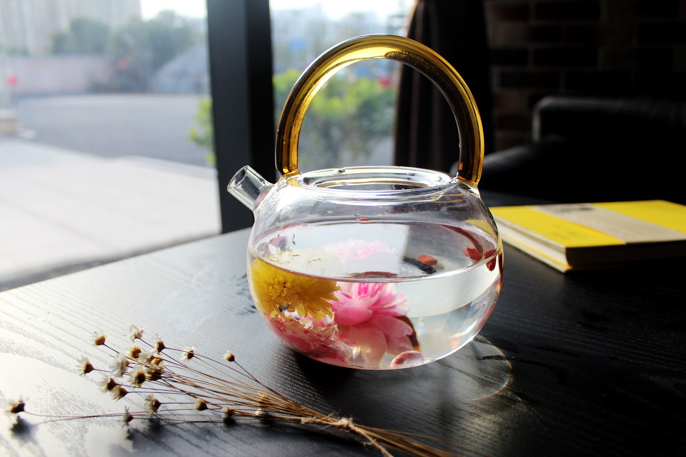

Conoce la importancia de lo natural
Por un futuro con mas conciencia ambiental

Los tés y su importancia
Conoce los beneficios que atrae tomar té

Aprende la importancia de alimentarse bien
Recetas saludables faciles de hacer